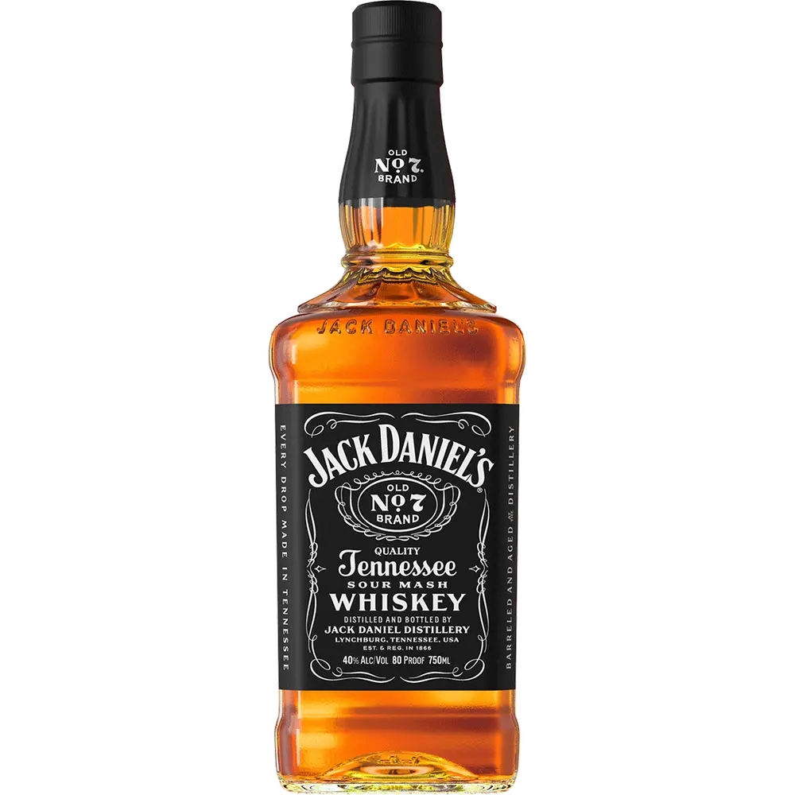
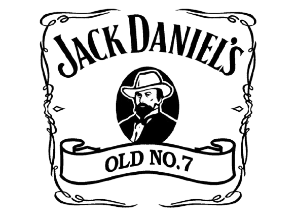
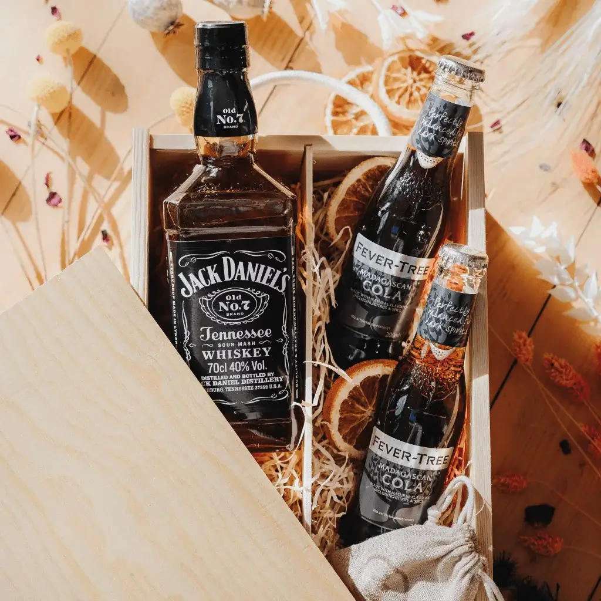
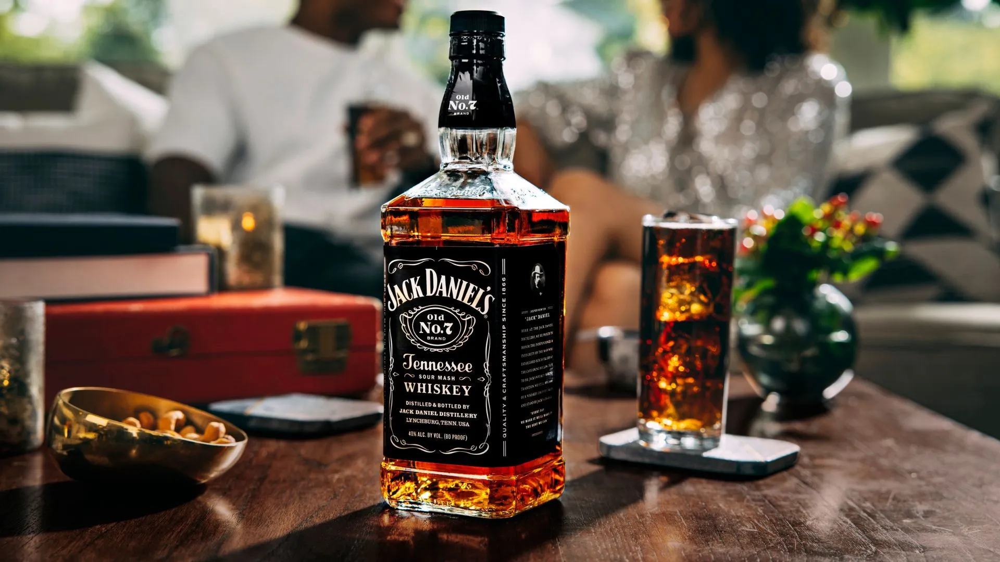

Old No.7 01 777 ZZZ
Our Selection
The Signature Line
Crafted with care since 1866, our Tennessee whiskey follows Mr. Jack's original recipe and process.
Explore AllDistilled With
80%
Corn
The foundation of our mash bill for sweetness.
12%
Rye
Adds spice and complexity to the flavor.
8%
Malted Barley
Provides enzymes for fermentation.
100%
Cave Spring Water
Iron-free from our own natural spring.
10ft
Sugar Maple Charcoal
For the Lincoln County Process filtration.
Our Timeline
1866

The First Barrel
Jasper Newton "Jack" Daniel registered his distillery, making it the first registered distillery in the United States.
1904

World's Fair Gold
Jack Daniel's Tennessee Whiskey won the Gold Medal for the finest whiskey at the 1904 World's Fair in St. Louis.